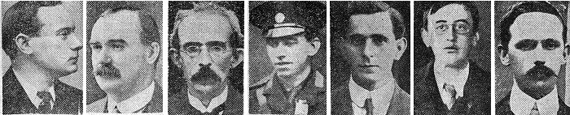

POBLACHT NA H EIREANN
___________________________
THE PROVISIONAL GOVERNMENT
OF THE
IRISH REPUBLIC
TO THE PEOPLE OF IRELAND
IRISHMEN AND IRISHWOMEN: In the name of God and of the dead generations from which she receives her old tradition of nationhood, Ireland, through us, summons her children to her flag and strikes for her freedom.
Having organised and trained her manhood through her secret revolutionary organisation, the Irish Republican Brotherhood, and through her open military organisations, the Irish Volunteers and the Irish Citizen Army, having patiently perfected her discipline, having resolutely waited for the right moment to reveal itself, she now seizes that moment, and, supported by her exiled children in America and by gallant allies in Europe, but relying in the first on her own strength, she strikes in full confidence of victory.
We declare the right of the people of Ireland to the ownership of Ireland, and to the unfettered control of Irish destinies, to be sovereign and indefeasible. The long usurpation of that right by a foreign people and government has not extinguished the right, nor can it ever be extinguished except by the destruction of the Irish people. In every generation the Irish people have asserted their right to national freedom and sovereignty; six times during the last three hundred years they have asserted it to arms. Standing on that fundamental right and again asserting it in arms in the face of the world, we hereby proclaim the Irish Republic as a Sovereign Independent State, and we pledge our lives and the lives of our comrades-in-arms to the cause of its freedom, of its welfare, and of its exaltation among the nations.
The Irish Republic is entitled to, and hereby claims, the allegiance of every Irishman and Irishwoman. The Republic guarantees religious and civil liberty, equal rights and equal opportunities to all its citizens, and declares its resolve to pursue the happiness and prosperity of the whole nation and all of its parts, cherishing all of the children of the nation equally and oblivious of the differences carefully fostered by an alien government, which have divided a minority from the majority in the past.
Until our arms have brought the opportune moment for the establishment of a permanent National, representative of the whole people of Ireland and elected by the suffrages of all her men and women, the Provisional Government, hereby constituted, will administer the civil and military affairs of the Republic in trust for the people.
We place the cause of the Irish Republic under the protection of the Most High God. Whose blessing we invoke upon our arms, and we pray that no one who serves that cause will dishonour it by cowardice, in humanity, or rapine. In this supreme hour the Irish nation must, by its valour and discipline and by the readiness of its children to sacrifice themselves for the common good, prove itself worthy of the august destiny to which it is called.
Signed on Behalf of the Provisional Government.
Thomas J. Clarke,
Sean Mac Diarmada, Thomas MacDonagh,
P. H. Pearse, Eamonn Ceannt,
James Connolly, Joseph Plunkett

The seven signatories of the Irish Proclamation (from left):
Padraig Pearse, James Connolly, Thomas Clarke, Thomas MacDonagh, Sean MacDermott,
Joseph Plunkett & Eamonn Ceannt
All of the above men were executed by the British Government for their efforts in trying to secure a free Ireland!